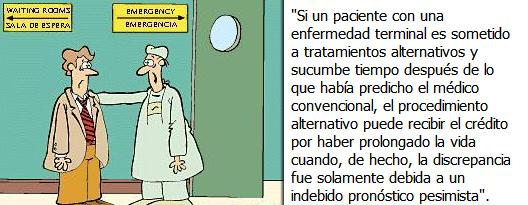

Resumen:
¿Por qué tantos pacientes inteligentes en otros aspectos y sus terapeutas pagan considerables sumas por productos y terapias de medicina alternativa, aún sabiendo que la mayoría de ellas son inútiles o peligrosas o no han sido sujetas a rigurosas pruebas científicas?. El autor propone un número de razones por las que esto ocurre: (1) Razones sociales y culturales (ej. Inhabilidad de muchos ciudadanos de hacer una elección informada acerca de un producto para el cuidado de la salud; actitudes anticientíficas mezcladas con misticismo de la Nueva Era; comercialización vigorosa y afirmaciones extravagantes; aversión hacia el fruto de la biomedicina científica; creencia en la superioridad de los productos “naturales”); (2) razones psicológicas (ej. Pensamiento deseoso; errores lógicos de juicio; anhelos, y “características demandantes”); (3) La ilusión de que una terapia inefectiva funciona, cuando realmente otros factores actuaron (Ej. El curso natural de la enfermedad; el efecto placebo; remisión espontánea; errores diagnósticos).
El autor concluye reconociendo que cuando la gente se enferma, cualquier promesa de cura es seductora. Pero advierte a los clientes potenciales de tratamientos alternativos ser cautelosos si esos tratamientos no están soportados por investigación científica confiable (se listan los criterios), sí la “evidencia” de la eficacia del tratamiento es anecdótica, testimonial o de literatura auto-publicada, y si el médico tiene una tendencia seudo-científica o conspiracionista, o promueve una cura que suena “demasiado buena para ser verdad.”
Acad. Med. 2001;76:230-237.
(El Dr. Beyerstein es profesor asociado del Laboratorio del Comportamiento Cerebral del Departamento de Sicología de la Universidad Simon Fraser, en Burnaby, Columbia Británica, Canadá.)

Si sólo los ignorantes y los crédulos fueran persuadidos por afirmaciones inverosímiles, se necesitaría muy poco para explicar la abundancia de estupidez en la sociedad moderna. Pero extrañamente, mucha gente que no es ni tonta ni poco educada se adhiere a creencias repudiadas por la ciencia. Por ejemplo, graduados universitarios, y aún algunos médicos, aceptan ciertos aspectos de la Medicina Alternativa y Complementaria (CAM por sus siglas en inglés), incluyendo el toque terapéutico, iridología, ear candling, homeopatía. Aún expertos altamente entrenados pueden ser engañados cuando ellos confían en su experiencia personal y razonamiento informal para inferir las causas de eventos complejos 1 2 3 4 . Esto es especialmente válido si ellos están evaluando situaciones en las cuales tienen un interés emocional, doctrinal o monetario. De hecho, fue el comprender que las limitaciones en la percepción, razonamiento, y memoria tienden a confortarnos, más que la verdad, lo que llevó a los pioneros de la ciencia moderna a sustituir las observaciones controladas y la lógica formal por las anécdotas y conjeturas que nos pueden llevar fácilmente al extravío. Esta lesión parece que se ha perdido en gran parte entre los proponentes de la CAM. Algunos, como Andrew Weil, la rechazan explícitamente, defendiendo en lugar de ello lo que Weil llama “pensamiento preciosista,” una mezcla de intuición mística y satisfacción emocional, para determinar la validez de una terapia 5.
Aquellos quienes defienden terapias de cualquier clase tienen la obligación de probar que sus productos son tanto seguros como efectivos. Lo último es una tarea más difícil ya que hay muchas formas sutiles en que pacientes honestos e inteligentes y sus terapeutas pueden ser llevados a pensar en que un tratamiento inútil ha producido una cura. CAM permanece “alternativa” debido a que sus practicantes dependen de testimonios subjetivos en lugar de ensayos clínicos aleatorizados (RCTs por sus siglas en inglés) para soportarse, y porque la mayoría de sus hipotético mecanismos están en discrepancia con aquellos aceptados por las ciencias básicas. Es mi intento aquí llamar la atención sobre varios factores sociales, psicológicos y cognitivos que han ayudado a convencer a muchas personas educadas que tratamientos no probados o científicamente desacreditados tienen mérito.
En el último siglo, procedimientos objetivos han sido desarrollados para evaluar la efectividad de remedios comúnmente aceptados y ayudado a distinguir cambios terapéuticamente inducidos en una condición patológica subyacente de la mejoría que puede seguir a cualquier intervención. Estos procedimientos forman las bases de la llamada “Medicina Basada en la Evidencia,” y sin tal demostración de que un tratamiento es seguro y efectivo, es éticamente cuestionable ofrecer un tratamiento al público. Dado que muchas terapias “alternativas”, “complementarias” o “integrativas” carecen de este tipo de soporte, uno debe preguntarse porque muchos de otra manera listos consumidores pagan confiadamente considerables sumas de dinero por productos de salud no probados y posiblemente peligrosos. Nosotros debemos además preguntarnos porque las afirmaciones de los practicantes de CAM permanecen tan refractarias a la información contraria.
Si una Terapia no ortodoxa (1) es inadmisible a una evaluación a priori (debido a que sus mecanismos implicados o sus efectos aceptados van en contra de leyes bien establecidas o hallazgos empíricos en física, química o biología); (2) carece de un razonamiento científico aceptable por sí misma, (3) Tiene insuficiente evidencia de soporte derivada de ensayos clínicos controlados; (4) Ha fallado en ensayos clínicos bien controlados realizados por evaluadores imparciales y ha sido incapaz de refutar explicaciones diferentes por las cuales podría parecer que funciona en situaciones cotidianas; y (5) Parece improbable, aún para los profanos en el tema, con base en el “sentido común”, entonces porque hay tanta gente bien educada que continua comprando este tipo de tratamientos?.
Consumidores de tratamientos no científicos pueden ser clasificados básicamente en dos grupos. Una vez que un comprador de cualquier grupo prueba un tratamiento no convencional la sensatez se sesga tendiendo a que aún las intervenciones más inútiles parezcan válidas. Integrantes del primer grupo frecuentemente se acercan a la CAM porque ellos sufren de alguna condición crónica que la medicina ortodoxa no maneja a su satisfacción o porque ellos viven con un miedo mórbido a perder su “bienestar”. Ellos asumen, erróneamente, que las autoridades competentes han validado los productos de la CAM. Los del segundo grupo escogen tratamientos alternativos por la convicción filosófica animista y la cosmología vitalista de la CAM, la cual rechaza las bases mecánicas y empíricas de la biomedicina científica. 6 La CAM adopta criterios subjetivos y emotivos, mientras que sus detractores exigen evidencia objetiva. Debido a que el concepto de salud de uno mismo se entrelaza con la suposición fundamental sobre la realidad propia, un ataque a las creencias personales en una cura no ortodoxa llega a amenazar la visión metafísica de la persona. En forma inexplicable, esto será resistido fervientemente.
La habilidad de defender la propia visión del mundo es incitada por un número de sesgos cognitivos que filtran y distorsionan la información no concordante. Debo retornar a esos procesos que inclinan los soportes a interpretar equivocadamente aquellas experiencias que sostienen las creencias en la CAM. Pero primero vamos a examinar el entorno cultural que ha adoptado un deseo muy difundido a desposarse con esas prácticas.
Razones psicológicas para la popularidad de las CAM
Desde hace tiempo los psicólogos han sabido que en términos generales la gente se esfuerza por moldear sus actitudes, creencias y comportamientos acorde a un todo armonioso. Cuando información perturbadora no puede ser ignorada fácilmente, los individuos tienen una gran habilidad para distorsionarla o segregarla para reducir la inevitable fricción. Es a estos giros mentales a los que vamos a referirnos ahora.
La voluntad de creer. Todos exhibimos una disposición a adoptar creencias confortantes y a aceptar, en forma acrítica, información que refuerza nuestro conjunto de actitudes y autoestima. 33 Como sería muy grato si el esperanzador discurso de las CAM fuera verdad, no es sorprendente que ellas a menudo saquen partido de esto, con poca exigencia de evidencia. Una vez introyectadas, esas creencias serán defendidas fervientemente, malinterpretando los datos contrarios cuando sea necesario. 34 35
Errores lógicos, falta de juicio y ausencia de grupos de control. Uno de los escollos mas prevalentes en la toma de decisiones diarias es la equivocación al correlacionar causalidad. Todos somos propensos a asumir que si dos sucesos acontecen próximos entre sí, uno debe ser causa del otro, aunque, en forma obvia, no tiene que ser necesariamente ese el caso. Este error lógico esta detrás de la mayoría de las supersticiones. Los testimonios para los ministerios de los curadores alternativos caen en el mismo error garrafal al asumir que cuando la mejoría sigue al tratamiento, este debe haber sido el responsable. El valor de las afirmaciones personales en las CAMs esta limitado a lo que Gilovich 36 ha llamado el problema de “comparado con que?”. No puede saberse si cualquier jactancioso tratamiento es efectivo sin realizar comparaciones doble-ciego con controles tratados con placebo. A pesar de que estos testimonios hechos por usuarios carecen de valor, los promotores de la CAM como Andrew Weil ofrecen poco más.
Quienes impugnan tratamientos marginales son frecuentemente objetados por los practicantes de CAM con la respuesta: “No me interesa lo que tus investigaciones digan. He visto mis tratamientos funcionar cientos de veces.” Desafortunadamente, esta clase de razonamiento intuitivo conduce asimismo a falsas conclusiones. Estos terapeutas ignoran muchas investigaciones en el área de la “heurística cognitiva” 37 38 que muestran como atribuciones causales erradas pueden surgir cuando confiamos en observaciones informales para determinar que causa o alivia los síntomas. Es especialmente difícil determinar causa y efecto cuando se evalúan terapias debido a que muchas variables relevantes interactúan simultáneamente- Determinaciones que la observación casual no puede descartar en forma segura.
Por ejemplo, Redelmeier y Tversky 39 mostraron como la gente tiende a percibir correlaciones ilusorias en eventos fortuitos. Ellos demostraron como esas “corazonadas” llevan a creencias falsas, pero muy difundidas, incluyendo el concepto de que los dolores artríticos son influenciados por el clima. Como las CAM derivan sus diagnósticos y tratamientos sólo de esta clase de folclor poco fiable, los clientes potenciales deberían exigir que todos los tratamientos alternativos se basen en los mismos estándares de prueba que los de la biomedicina científica. Al introducir ensayos clínicos controlados y métodos epidemiológicos, los pioneros de la medicina científica esperaron reducir el número de falsas atribuciones de causa que los errores del razonamiento humano pueden producir. Una crítica reciente a estudios que enuncian que varias prácticas religiosas mejoran la salud ofrecen buenos ejemplos de como atribuciones casuales dudosas surgen cuando la necesidad de un simple grupo control es ignorada.
Pensamiento deseoso y “características demandantes.” Es común el distorsionamiento en la percepción de la realidad al servicio del dogma. De acuerdo con la teoría de disonancia cognitiva, 40 el disestrés mental se produce cuando nueva información contradice las actitudes, sentimientos o creencias existentes. Para aliviar la ansiedad, tendemos a distorsionar la información ofensiva, nuestras memorias o ambas. Por ejemplo, La disonancia se podría crear si un individuo no recibe beneficio de un tratamiento alternativo después de “soportarlo” e invertir en él tiempo y dinero. Desde luego, allí habrá una presión fuerte para encontrar algún provecho compensatorio en el tratamiento en vez de aceptar las implicaciones psicológicas de admitir que ha sido un desperdicio. Así, los pacientes de las CAM y sus terapeutas frecuentemente recuerdan cosas como ellos hubiesen querido que sucedieran, en vez de como realmente ocurrieron. Y como los practicantes de las CAM desdeñan el almacenamiento cuidadoso de los registros y los ensayos clínicos aleatorizados, ellos pueden ser selectivos en lo que recuerdan, llevando a una sobreestimación de sus tasas de éxito mientras ignoran o dejan de lado sus fracasos.
De la misma forma, hay muchos prejuicios auto-impuestos que ayudan a mantener la autoestima y a promover un intercambio social armonioso. Un ilusorio sentimiento de que los síntomas de uno han sido abatidos puede ser debido a un número de las llamadas “características demandantes” encontradas en cualquier sesión terapéutica : En todas las sociedades existe una “norma de reciprocidad”, una regla implícita que obliga a la gente a responder en forma amable cuando alguien le hace una buena acción. La mayoría de terapeutas quieren sinceramente ayudar a sus pacientes, y es normal que los pacientes quieran complacerlos a cambio. A menos que los clientes necesariamente sepan esto, tales obligaciones (en la forma de demandas sociales implícitas) son suficientes para inflar sus percepciones sobre cuanto beneficio han recibido. Así, controles para estos efectos condescendientes deben ser construidos en los ensayos clínicos. 41
¿Por qué pueden los terapeutas y sus clientes concluir que terapias inefectivas funcionan?
A pesar de que en la vida diaria los términos “enfermedad” y “dolencia” son intercambiables, vale la pena distinguir entre los dos. Yo uso “enfermedad” para referirme a un estado patológico de un organismo. Con el término “dolencia” quiero decir los sentimientos subjetivos de malestar, dolor, desorientación o disfuncionalidad , que acompañan un estado patológico. Nuestra reacción subjetiva a las sensaciones naturales que nosotros llamamos síntomas es, como todas las otras percepciones, una compleja construcción 7cognitiva. Por si mismas, estas son moldeadas por factores como las actitudes, sugerencias, expectativas, características demandantes, prejuicios autoimpuestos y autodecepción. La experiencia de dolencia también se afecta (frecuentemente en forma inconsciente) por un patrón de ganancias sociales, monetarias y psicológicas que acumulan aquellos que admiten el “rol de enfermo” en la sociedad. 42 Para ciertos individuos, esos privilegios y beneficios son suficientes para perpetuar la experiencia de dolencia después de que la enfermedad ha sido abatida, o aún para crear sentimientos de dolencia en ausencia de enfermedad. A menos que nosotros podamos apartar esos factores que contribuyen a la percepción individual de estar enfermo, los testimonios personales son una pobre base sobre la cual juzgar si una supuesta terapia ha curado en efecto a alguien. Porque entonces, puede alguien erróneamente creer que ha sido ayudado por un tratamiento inerte?
La enfermedad puede seguir su curso natural. Muchas enfermedades son autolimitadas. Así, antes que el poder curativo de una supuesta terapia pueda ser reconocido, debe demostrarse que el porcentaje de pacientes que mejoraron al hacerse el tratamiento exceden la proporción esperada de pacientes que se recuperaron sin intervención alguna (o que consistentemente se recuperaron mas rápido). Salvo que los terapeutas no convencionales muestren registros detallados de éxitos y fracasos en un número suficientemente grande de pacientes con la misma queja, ellos no pueden afirmar que han excedido las normas para una recuperación espontánea.
Muchas enfermedades son cíclicas. Por ejemplo, la artritis, esclerosis múltiple, asma, alergias, migrañas y muchas quejas dermatológicas, ginecológicas y gastrointestinales habitualmente tienen sus “altos y bajos.” No es sorprendente que quienes las sufren tiendan a buscar terapia durante los empeoramientos de cualquier ciclo dado. En consecuencia un tratamiento ficticio tendrá repetidas oportunidades para coincidir con una de las mejorías que habría ocurrido de todos modos. Sin estudios clínicos aleatorizados, tanto los consumidores como los vendedores están propensos a malinterpretar mejorías debidas a variaciones cíclicas normales como efectos terapéuticos válidos.
El efecto placebo. La principal razón para que los remedios dudosos sean acreditados con mejorías subjetivas y ocasionalmente objetivas es el ubicuo efecto placebo. 43 44 La historia de la medicina esta plagada de ejemplos en los cuales, en retrospectiva, terapias que ahora parecen descabelladas fueron entusiastamente aceptadas por médicos y pacientes por igual. 45 46 Estos conceptos erróneos surgieron de la falsa suposición de que los cambios en los síntomas que seguían un tratamiento debían haber sido una consecuencia específica de dicho procedimiento. A través de una combinación de sugestión, esperanza y reinterpretación cognitiva, pacientes a quienes se les da tratamientos biológicamente inefectivos con frecuencia pueden experimentar mejoría subjetiva; en consecuencia, la necesidad de controles placebo que los practicantes de las CAM invariablemente rehúsan a instituir en lugar de sus encuestas de satisfacción a clientes.
Muchos de los tratamientos de las CAMs, aún cuando son incapaces de afectar la enfermedad en sí misma, la hacen más soportable, pero por razones psicológicas. El dolor es un ejemplo. Las Clínicas del dolor modernas muestran que el sufrimiento puede frecuentemente ser disminuido por medios psicológicos, aún si la patología subyacente permanece sin cambios. 47 48
Cualquier cosa que pueda mitigar la ansiedad, desviar la atención, disminuir la excitación, adopta una especie de control, o lleva a reinterpretación cognitiva de los síntomas que puede aliviar el componente agónico del dolor. 49 Esto es obviamente benéfico si los pacientes sufren menos, pero debemos ser cuidadosos de que el puro alivio sintomático no aparte a la gente de remedios probados para la condición subyacente hasta que sea demasiado tarde para que sean efectivos. Es importante que, los procedimientos enfocados solamente a aliviar los síntomas nunca deban preceder los exámenes diagnósticos apropiados y al menos a un razonable diagnóstico diferencial provisional
Debido a que el poder de la esperanza y los efectos de complacencia son muy fuertes, tanto terapeutas como pacientes deben ser “ciegos” con respecto al estatus de tratamiento activo versus placebo.[#]_ Tales precauciones son necesarias debido a que en forma no intencional, señales apenas perceptibles, son transmitidas por los proveedores del tratamiento “no ciegos”, que pueden influir los resultados de los ensayos. Así mismo, aquellos que evalúan los efectos del tratamiento deben ser ciegos, hay una gran cantidad de literatura sobre “sesgos experimentales” que muestra que profesionales escrupulosos y bien entrenados pueden inconscientemente “leer” los resultados que ellos esperan cuando están evaluando efectos complejos. 50
Los defensores de las CAMs usualmente se quejan de que la medicina convencional continúa utilizando muchos tratamientos que aún no han cumplido adecuadamente con estos estándares. Esto puede ocurrir en algunas instancias, pero el porcentaje de estas dilaciones es tremendamente exagerado por las “alternativas”. 51 A cualquier tasa, estas acusaciones hacen nada por mejorar la credibilidad de la CAM, Por el solo hecho de defender que “son tan malos como nosotros” no se ofrece evidencia positiva a favor de sus propias creencias. La diferencia crucial entre la biomedicina científica y las CAM es que, al contrario de las “alternativas”, la medicina científica esta institucionalmente comprometida a despojarse de tratamientos que fallan al pasar revista, y no se aferra a procedimientos y teorías que contradicen las ciencias básicas.
Remisión espontánea. Cualquier cura reportada en forma anecdótica puede ser debida a una rara pero no imposible “remisión espontánea.” Aún con cánceres que casi siempre son letales, algunos tumores ocasionalmente desaparecen sin tratamientos adicionales. Un experimentado oncólogo reportó que ha visto 12 de tales eventos en cerca de 6,000 casos que ha tratado. 52 Los terapeutas alternativos pueden recibir alabanzas inmerecidas por aquellas remisiones debido a que muchos pacientes desesperados acuden a ellos con un sentimiento de que no tienen nada que perder. Cuando los “alternativos” publicitan estos eventos, raramente revelan que porcentaje de su aparentemente terminal clientela esta representada por esas felices excepciones. El mecanismo exacto responsable de las remisiones espontáneas aún no está bien dilucidado, pero muchas investigaciones están siendo dedicadas a revelar y posiblemente esclarecer los mecanismos responsables de estas recuperaciones inesperadas.
Somatización y miedo a perder el “bienestar.” Mucha gente puede ser inducida a pensar que sufre de enfermedades que no tiene. Cuando esas personas saludables reciben de médicos ortodoxos la singularmente indeseable noticia de que no tiene indicios de enfermedad, ellos frecuentemente se apoyan en practicantes alternativos, quienes siempre pueden encontrar algo que tratar. Si la “recuperación” se lleva a cabo, otro converso ha nacido. Los sanadores alternativos también abastecen la “fuente de la preocupación” que mora en quien padece síntomas leves y cree que ellos deben tomar precauciones elaboradas para evitar perder su buena salud.
Hay muchas quejas físicas que pueden tanto ser provocadas por disestrés sicosocial como ser aliviadas al tranquilizar y dar soporte. A primera vista, estos síntomas (Que en ocasiones son llamados “psicosomáticos”, “histéricos” o “neurasténicos”) se parecen a algunos de síndromes médicos reconocidos. 53 54 Son sin embargo, ejemplos de somatización, la tendencia a expresar preocupaciones psicológicas en un lenguaje de síntomas corporales. 55 56 Aunque hay muchas “ganancias secundarias”(Ej. Recompensas psicológicas, sociales y económicas) que se acumulan en quienes se deslizan dentro del “papel de enfermo” en este sentido, necesitamos no acusarlos de fingirse enfermos voluntariamente para señalar que sus síntomas son no obstante engendrados y aliviados por procesos sicosociales sutiles. Las CAM ofrecen tranquilidad a aquellos individuos que necesitan creer que sus síntomas tienen causas médicas en vez de psicológicas (aunque, paradójicamente, Las CAM enseñan que todas las enfermedades provienen de lapsos mente/espíritu). Con la ayuda de aparatos diagnósticos seudo-científicos, practicantes marginales refuerzan la convicción del somatizador de que el establecimiento médico de corazón frío y mente estrecha, el cual no puede encontrar nada físicamente errado, es tanto incompetente como injusto en rehusar reconocer una condición orgánica muy real. Obviamente es valioso cuando “sanadores” acientíficos suministran la certeza, sentido de pertenencia y soporte existencial que sus clientes realmente están buscando, pero proveer esto no deben ser ajeno a los practicantes científicos, quienes tienen mucho más que ofrecer.
Los clientes de las CAM no comprometen sus apuestas. En un intento por atraer más clientela , muchos sanadores no ortodoxos han comenzado a llamarse a ellos mismos “complementarios” o “integrativos” en vez de proveedores “alternativos”. En lugar de asistir primariamente al compromiso ideológico o a aquellos a quienes han dicho que la medicina convencional no tiene más que ofrecer, los “alternativos” han comenzado a darse cuenta de su habilidad para asirse a tratamientos científicos. Ellos aceptan que los practicantes ortodoxos pueden aliviar síntomas específicos pero que la medicina alternativa trata la causas reales de la enfermedad - imbalances dietarios dudosos y sensibilidades ambientales, campos energéticos perturbados, o aún conflictos no resueltos de encarnaciones pasadas.6 Si la mejoría sigue al tratamiento conjunto científico-“complementario” los practicantes marginales exigen y frecuentemente consiguen, una desproporcionada parte del crédito.
Errores diagnósticos. Los médicos entrenados científicamente no afirman infalibilidad, y los diagnósticos equivocados, siguen un viaje al sepulcro; un sanador alternativo, o herbalista puede conducir a un deslumbrante testimonio de una grave enfermedad que nunca existió. En otras ocasiones, el diagnóstico puede ser correcto pero la predicción temporal de su curso ser inexacta. Si un paciente con una enfermedad terminal es sometido a tratamientos alternativos y sucumbe tiempo después de lo que había predicho el médico convencional, el procedimiento alternativo puede recibir el crédito por haber prolongado la vida cuando, de hecho, la discrepancia fue solamente debida a un indebido pronóstico pesimista.
Beneficios derivados. Los curadores alternativos habitualmente tienen personalidades carismáticas y entusiastas. 57 58 59 Los pacientes deslumbrados por los aspectos mesiánicos de las CAM pueden experimentar un enaltecimiento psicológico que puede intensificar los efectos placebo y engendrar otros aspectos benéficos. Elevando la moral de los pacientes y sus expectativas se puede motivar gran cumplimiento con, y de ahí la efectividad de, los tratamientos ortodoxos en curso. Estos beneficios secundarios pueden además llevar a los pacientes a mejorar sus hábitos dietarios y de sueño y a ejercitarse y socializar mas. Estos cambios, por sí solos, pueden ayudar a la recuperación natural, o al menos, hacer que el tiempo de convalecencia sea mejor tolerados. Efectos psicológicos indirectos de este tipo pueden además reducir el estrés que se ha demostrado que tiene efectos deletéreos en el sistema inmune. 60 Quitando esta carga adicional se puede acelerar la recuperación, aún si no es un efecto específico de la terapia.
Conclusiones

Los clientes potenciales deben averiguar si un tratamiento alternativo que ellos están considerando está soportado por investigaciones publicadas en revistas médicas cuyos procesos de revisión se esfuerzan por eliminar artefactos experimentales que llevan a falsas impresiones de curas. Aún así, debido a que cualquier hallazgo único puede siempre ser debido a una variable de confusión no detectada o a una casualidad estadística, la reproducción de los descubrimientos en forma independiente es esencial. Si una publicación sostiene haber cumplido con los anteriores criterios, los clientes deben siempre sin embargo revisar la dimensión del efecto del tratamiento reportado, hay muchos “efectos verdaderos pero triviales” que son estadísticamente significativos pero demasiado pequeños para ser útiles clínicamente. Uno debe ser escéptico si, en lugar de ensayos aleatorizados controlados, la “evidencia” consiste en anécdotas, testimonios, panfletos o libros auto-publicados. La documentación de soporte debe provenir de publicaciones científicas imparciales en vez de revistas de propiedad de los promotores de las prácticas cuestionables o de las “revistas de vanidades,” las cuales aceptan virtualmente todas las sumisiones y cobran una tarifa a los autores por publicarlas.
Los clientes deben ser incrédulos hacia cualquier practicante que (1) es ignorante u hostil hacia la corriente principal de la ciencia; (2) no puede proporcionar una explicación razonable para sus métodos; (3) usa jerga promocional enlazada a alusiones de fuerzas espirituales y energías vitales o a planos inciertos, vibraciones, imbalances y susceptibilidades; (4) asegure poseer ingredientes o procesos secretos; (5) apele a conocimientos ancestrales y a “otras formas de conocimiento”; (6) afirme “tratar a la persona como un todo” en vez de enfermedades órgano-específicas; o (7) declare ser perseguido por la vieja guardia y aliente acciones políticas en su nombre, o esté presto a atacar o demandar a sus críticos en vez de responder con investigaciones válidas. Los practicantes con grados de instituciones no acreditadas o quienes venden sus propios preparados en sus oficinas y enfatizan la necesidad de visitas frecuentes “para mantenerse bien” son también una causa de preocupación. La presencia de literatura seudo-científica y conspiracionista en la sala de espera debe poner a un pensador lúcido a buscar la puerta de salida. Y, sobre todo, si los resultados prometidos van más allá de aquellos ofrecidos por los terapeutas convencionales y afirman que no hay efectos adversos, la probabilidad es de que uno esta tratando con un charlatán. En pocas palabras, si algo suena demasiado bueno para ser verdad, probablemente lo sea.
Cuando la gente se enferma, cualquier promesa de cura es seductora. Como resultado, el sentido común y la disposición a exigir evidencia son fácilmente suplantadas por una falsa esperanza. En este estado vulnerable, la necesidad de una evaluación crítica de las opciones terapéuticas es más- en vez de menos- necesaria. Quienes todavía piensan que pueden permitirse aventurarse en la mercadería de los remedios no probados deben llevar en mente el sabio consejo de Goethe: “Nada es más peligroso que la ignorancia activa.”
Referencias
- 1
-
Nisbett R, Ross L. Human Inference: Strategies and Shortcomings of Social Judgment. Engelwood Cliffs, NJ: Prentice-Hall, 1980.
- 2
-
Schick T, Vaughn L. How to Think About Weird Things: Critical Thinking for a New Age. Mountain View, CA: Mayfield Publishing, 1995.
- 3
-
Gilovich T. How We Know What Isn’t So: The Fallibility of Human Reason in Everyday Life. New York: Free Press/Macmillan,1991 .
- 4
-
Levy D. Tools of Critical Thinking. Needam Heights, ma: Allyn and Bacon, 1997.
- 5
-
Relman A. A trip to Stonesville. The New Republic.1998; 378:28 -37.
- 6
-
Beyerstein B, Downie S. Naturopathy. The Scientific Review of Alternative Medicine. 1998;2:20 -8.
- 7
-
Frankel C. The nature and sources of irrationalism.Science . 1973;180:927 -31.
- 8
-
Basil R (ed). Not Necessarily the New Age. Amherst, NY: Prometheus Books,1988.
- 9
-
Kiernan V. Survey plumbs the depths of international ignorance.The New Scientist .1995; 146(29April):7.
- 10
-
Gross P, Levitt N. Higher Superstition. Baltimore, MD: Johns Hopkins University Press, 1994.
- 11
-
Sokal A, Bricmont J. Intellectual Impostures. London, England: Profile Books, 1998.
- 12
-
Stalker D, Glymour C (eds). Examining Holistic Medicine. Amherst, NY: Prometheus Books,1985 .
- 13
-
Barrett S, Jarvis W. The Health Robbers: A Close Look at Quackery in America. Amherst, NY: Prometheus Books,1993 .
- 14
-
Beyerstein B. The brain and consciousness-implications for psi phenomena. The Skepical Inquirer.1987; 12:163 -73.
- 15
-
Beyerstein B. Pseudoscience and the brain: tuners and tonics for aspiring superhumans. In: Della Sala S. (ed). Mind Myths: Exploring Popular Misconceptions about the Mind and Brain. Chichester, U.K.: J. Wiley and Sons, 1999: 59-82.
- 16
-
Benson H. Timeless Healing: The Power and Biology of Belief. New York: Simon and Schuster, 1996.
- 17
-
Meyer D. The Positive Thinkers: A Study of the American Quest for Health, Wealth, and Personal Power from Mary Baker Eddy to Norman Vincent Peale. New York: Doubleday-Anchor,1965 .
- 18
-
Tessman I, Tessman J. Mind and body. Science.1997; 276:369 -70.
- 19
-
Tessman I, Tessman J. Troubling matters. Science.1997; 278:561 .
- 20
-
Sloan RP, Bagiella E, Powell T. Religion, spirituality and medicine. Lancet. 1999;353:664 -7.
- 21
-
Eisenberg DM, et al. Trends in alternative medicine use in the United States, 1990-1997: results of a follow-up national survey.JAma . 1998; 280:1569 -75.
- 22
-
Beyerstein B, Sampson W. Traditional medicine and pseudoscience in China (Part 1). The Skeptical Inquirer.1996; 20: 18-26. Sampson W, Beyerstein B. Traditional medicine and pseudoscience in China (Part 2). The Skeptical Inquirer. 1996;20:27-34.
- 23
-
Hui KK. Is there a role for traditional Chinese medicine?JAma . 1997;277:714 . [A reply by W. Sampson and B. Beyerstein follows.]
- 24
-
Knauer D. Therapeutic touch on the hot-seat. The Canadian Nurse. 1997;X:10 .
- 25
-
Thadani M. Herbal Remedies: Weeding Fact from Fiction. Winnipeg, Manitoba, Canada: Context Publications,1999 .
- 26
-
Robins R, Post J. Political Paranoia: The Psychopathology of Hatred. New Haven, CT: Yale University Press,1997 .
- 27
-
Starr P. The Social Transformation of American Medicine. New York: Basic Books, 1982.
- 28
-
Ernst E. Harmless herbs? A review of the recent literature.Am J Med . 1998;104:170 -8.
- 29
-
Sutter MC. Therapeutic effectiveness and adverse effects of herbs and herbal extracts. British Columbia Med J.1995; 37:766-70.
- 30
-
Winslow L, Kroll D. Herbs as medicines. Arch Intern Med. 1998;158:2192 -9.[Medline]
- 31
-
Betz W. Herbal crisis in Europe. The Scientific Review of Alternative Medicine [in press].
- 32
-
Ko RJ. Adulterants in Asian patient medicines. N Engl J Med. 1998;339:847 .
- 33
-
Alcock J. The belief engine. The Skeptical Inquirer.1995; 19:14 -8.
- 34
-
Zusne L, Jones W. Anomalistic Psychology: A Study of Magical Thinking. 2nd ed. Hillsdale, NJ: Lawrence Erlbaum Associates,1989 .
- 35
-
Beyerstein B, Hadaway P. On avoiding folly. J Drug Issues. 1991;20:689 -700.
- 36
-
Gilovich T. Some systematic biases of everyday judgment. The Skeptical Inquirer. 1997;21:31 -5.
- 37
-
Tversky A, Kahneman, D. Judgement under uncertainty: heuristics and biases. Science. 1974;185:1124 -31.
- 38
-
Redelmeier D, Tversky A. On the belief that arthritis pain is related to the weather. Proc Natl Acad Sci USA.1996; 93:2895 -6.
- 39
-
Festinger L. A Theory of Cognitive Dissonance. Stanford, CA: Stanford University Press, 1957.
- 40
-
Adair J. The Human Subject. Boston, ma: Little, Brown, 1973.
- 41
-
Alcock J. Chronic pain and the injured worker. Can Psychol. 1986;27:196 -203.
- 42
-
Roberts A, Kewman D, Hovell L. The power of nonspecific effects in healing: implications for psychosocial and biological treatments. Clin Psychol Rev. 1993;13:375 -91.
- 43
-
Shapiro AK, Shapiro E. The Powerful Placebo. Baltimore, MD: Johns Hopkins University Press, 1997.
- 44
-
Hamilton D. The Monkey Gland Affair. London, U.K.: Chatto and Windus, 1986.
- 45
-
Skrabanek P, McCormick J. Follies and Fallacies in Medicine. Amherst, NY: Prometheus Books,1990 .
- 46
-
Melzack R. Pain: past, present and future. Can J Psychol. 1993;47:615 -29.
- 47
-
Brose WG, Spiegel D. Neuropsychiatric aspects of pain management. In: The American Psychiatric Press Textbook of Neuropsychiatry. Washington, DC: American Psychiatric Press, 1992:245 -75.
- 48
-
Smith W, Merskey H, Gross S (eds). Pain: Meaning and Management. New York: SP Medical and Scientific Books,1980 .
- 49
-
Rosenthal R. Experiment Effects in Behavioral Research. New York: Appleton-Century-Crofts,1966 .
- 50
-
Chapman L, Chapman J. Genesis of popular but erroneous diagnostic observations. J Abnorm Psychol.1967; 72:193 -204.
- 51
-
Ellis J, Mulligan I, Rowe J, Sackett D. Inpatient general medicine is evidence based. Lancet.1995; 346:407 -10.
- 52
-
Silverman S. Medical “miracles”: still mysterious despite claims of believers. Psientific American. July1987 : 5-7. [Newsletter of the Sacramento Skeptics Society, Sacramento, CA]
- 53
-
Merskey H. The Analysis of Hysteria: Understanding Conversion and Dissociation. 2nd ed. London, U.K.: Royal College of Psychiatrists, 1995.
- 54
-
Stewart D. Emotional disorders misdiagnosed as physical illness: environmental hypersensitivity, candidiasis hypersensitivity, and chronic fatigue syndrome. Int J Mental Health.1990; 19:56 -68.
- 55
-
McWhinney IR, Epstein RM, Freeman TR. Rethinking somatization.Ann Intern Med . 1997;126:747 -50.
- 56
-
Shorter E. From Paralysis to Fatigue: A History of Psychosomatic Medicine in the Modern Era. New York: Free Press/Macmillan, 1992.
- 57
-
O’Connor G. Confidence trick. Med J Aust1987; 147:456 -9.
- 58
-
Nolen WA. Healing: A Doctor in Search of a Miracle. New York: Fawcett Crest, 1974.
- 59
-
Randi J. The Faith Healers. Amherst, NY: Prometheus Books, 1989.
- 60
-
Ader R, Cohen N. Psychoneuroimmunology: conditioning and stress.Annu Rev Psychol . 1993;34:53 -85.
Volver a la sección Escepticismo
Comentarios
Comments powered by Disqus